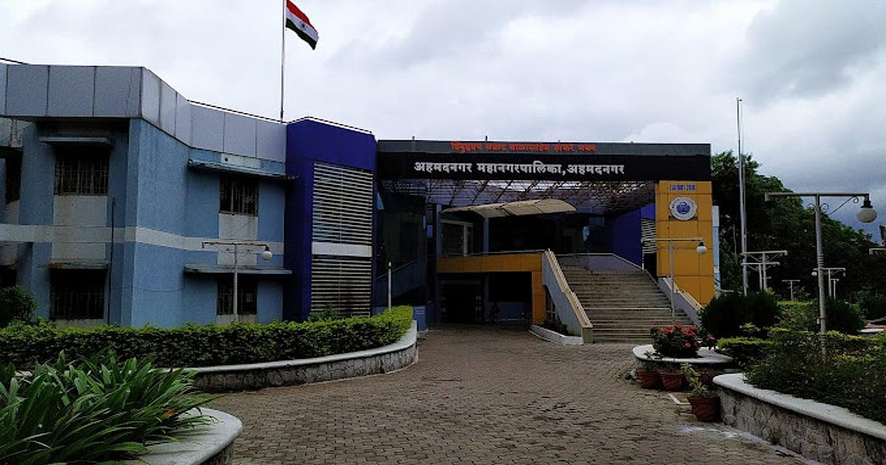
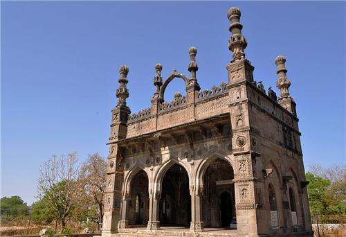
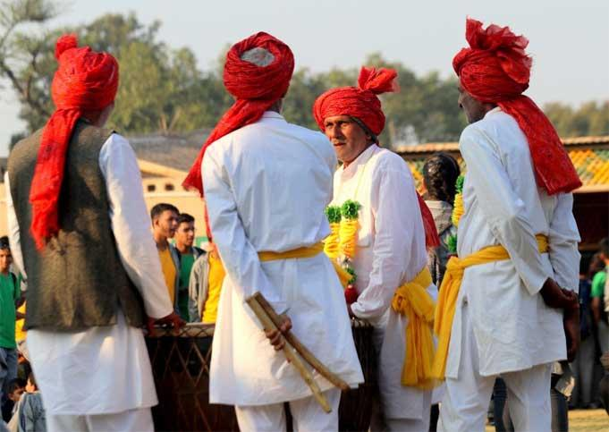
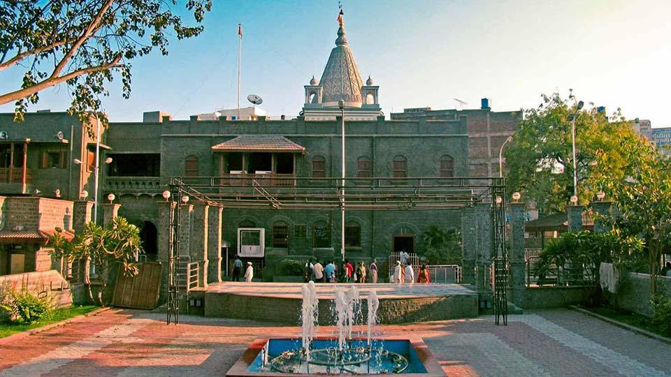
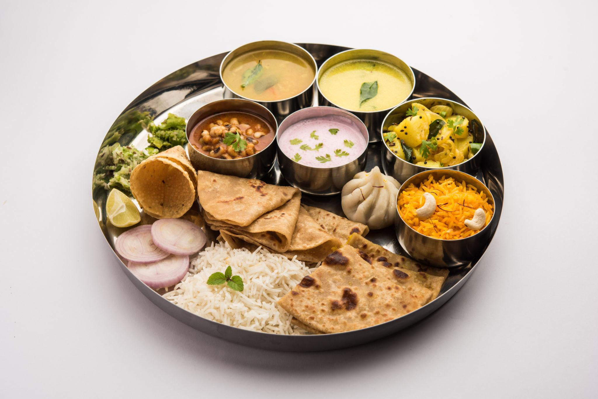
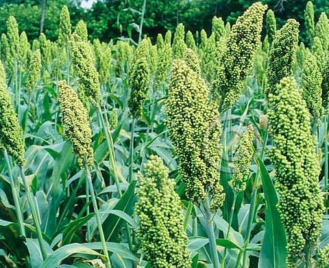
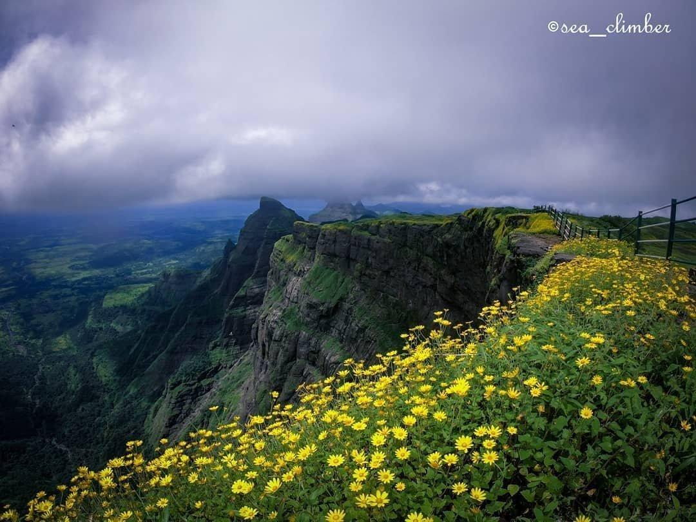

About

Situated along the Sina River, this historical city is in close proximity to major metropolitan areas like Pune (approx. 120 km) and Aurangabad. It is known for its arid-to-semi-arid terrain and serves as a major pass-through for Deccan region travelers.
- Location: Situated along the Sina River in central Maharashtra, about 120 km northeast of Pune and 250 km east of Mumbai.
- Famous as: The historic capital of the Nizam Shahi Sultanate, the birthplace of India's cooperative movement, and a major spiritual hub housing Meherabad and nearby Shirdi.
History

The city was the capital of the Nizam Shahi dynasty. It is anchored by the imposing Ahmednagar Fort, a former bastion of the Mughals, Marathas, and British, and famous for housing Jawaharlal Nehru during his imprisonment, where he wrote The Discovery of India.
- Ancient Roots: Thrived under major early dynasties including the Mauryas, the Satavahanas, and the Western Chalukyas who ruled the wider Deccan region.
- Key Rulers: Passed through the hands of the Rashtrakutas, the Yadavas of Devagiri, the Nizam Shahi Sultanate (who founded the city), the Maratha Empire, and eventually the British Raj.
- Historic Sites: Home to the massive Ahilyanagar Fort (Ahmednagar Fort), the unique octagonal Salabat Khan's Tomb (often called Chand Bibi Mahal), the royal ruins of Farah Bagh, and the ancient rock-cut Takali Dhokeshwar Shiva temple.
Culture

The local culture is a vibrant mix of Persian and Maratha influences. It is a massive center for spiritual tourism, housing globally recognized sites like Shirdi (home to Sai Baba), Meherabad, and the unique, doorless village of Shani Shinganapur
- Main Festivals: Celebrates Ganesh Utsav and Diwali with massive public joy, along with the giant Urus festivals at local Sufi shrines, the grand fair at Shani Shinganapur, and Ramnavami in nearby Shirdi.
- Traditional Arts:Home to vibrant Tamasha (folk theatre), Povada (ballad singing), and beautiful Gondhal performances that tell stories of local gods and heroes during festivals.
- Language:Marathi is the main language spoken by almost everyone, with unique local accents, while Hindi and English are widely understood for business and tourism.
Tourism

Beyond its spiritual and historical forts, the city boasts the Cavalry Tank Museum, a one-of-a-kind Asian facility showcasing historic battle tanks. Nature enthusiasts also visit the Rehekuri Blackbuck Sanctuary.
- Ahmednagar Fort: Imposing 15th-century fortress, British-era prison for national leaders, birthplace of Nehru's famous book The Discovery of India.
- Takali Dhokeshwar Temple: Ancient 5th-century rock-cut cave temple, dedicated to Lord Shiva, featuring beautifully carved monolithic pillars and deities.
- Salabat Khan's Tomb: Striking three-story octagonal stone structure, perched high on a hill, offering panoramic views of the entire city.
Famous Food

The local cuisine is famously described as Zan Zanit (spicy and flavor-packed). Iconic specialties include Papad Bhaji, hearty Vada Pav, and traditional misal from legendary local eateries.
- Famous dishes:Renowned for Mutton Kala Rassa (a rich, earthy goat meat gravy cooked in traditional black masala spice), crispy Bhakri flatbreads, and the signature Papad Bhaji, which has been a beloved evening street food staple since the 1980s.
- Local Specialty: Famous for Hurda (tender, sweet green jowar grains roasted over hot coal embers during winters), spicy local Chiwda snacks, and Anand Mukhwas—a popular, aromatic betel nut and fennel digestive blend crafted right in the district.
Economy

The district is the birthplace of the cooperative movement in India and is heavily driven by sugar factories, dairy cooperatives, and banking. It also hosts massive military and engineering establishments like the Indian Armoured Corps Centre & School and VRDE.
- Key Industries:Driven by massive cooperative sugar factories, massive dairy processing plants, and major military engineering centers like the Vehicle Research and Development Establishment (VRDE).
- Main Crops:Dominated by sugarcane, sweet green Jowar (sorghum) used for fresh Hurda, bajra (pearl millet), and heavy yields of onions, garlic, and bright pomegranates.
Environment

The geography features the flat, eastern Deccan Plateau prone to semi-arid conditions, resulting in dry, hot summers. Conservation efforts are active in the region, particularly around wildlife sanctuaries and eco-villages like Pimpri Gawali.
- Climate:Type: Experiences a semi-arid, hot climate with dry summers where temperatures typically range from 35°C to 40°C (rarely crossing 45°C), followed by a moderate southwest monsoon from June to September, and pleasant, dry winters
- Key Rivers:The major lifelines are the Godavari River and its main tributaries like the Pravara River and Mula River, along with the Sina River which flows directly past the main city area.
- Protected Areas:Home to the Rehekuri Blackbuck Sanctuary (a safe haven for the famous Indian antelope) and the Kalsubai Harishchandragad Wildlife Sanctuary, which covers the highest mountain peaks of Maharashtra.
Sports

Sports and physical fitness are heavily embedded in the city's DNA due to the strong presence of the Indian Army. The military installations provide robust infrastructure, while traditional Indian sports like wrestling (kushti) remain incredibly popular at the grassroots level.
- Traditional Sports: Heavily centered around traditional clay-pit wrestling (Kushti), which thrives in local talims (training centers), alongside highly popular rural Kabaddi and Kho-Kho tournaments that draw massive local crowds.
- Focus: Main venues include the Wadia Park District Sports Stadium, which features modern running tracks and fields. The athletic focus is on promoting weightlifting, boxing, and gymnastics—spurred by the elite training facilities and coaches within the local Indian Army installations (Armoured Corps Center).